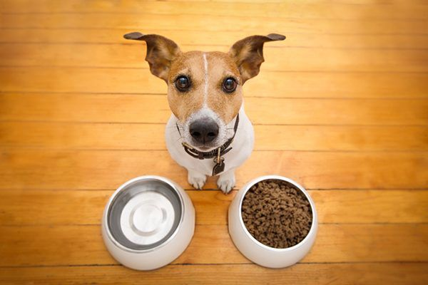

KIBBLE!

Kibble is probably your dog's not so favorite food but forced to eat because you are cheap.
For all we know, kibble is basically the cereal for Dogs, they are convenient and cheap.
And we always wonder, what is kibble made out of, right?
Ingredients:
- Rendered meat products (livestock, seafood, horses and other dead animals)
- Cereal and Grains
- Fruits and vegetables
- Preservatives
- Synthetic vitamins and minerals
- Gelling agents
- Stabilisers
Steps:
- Drive your car to a store nearby, prefereably a pet store
- Find yourself a big bag of kibble
- Bring back kibble home
- Open bag of kibble and scoop based on your dog's size and appetite
- Let your dog eat and enjoy
- If dog wouldn;t eat kibble, go take your ass back to the store
- Buy raw chicken drumsticks or thighs (they are cheap)
- Cook them with boiling water until cooked
- Take skin out of chicken and mix chicken meat wiht kibble
- Your dog is happy and full